No edifício de fachada chanfrada, foi retirado um prisma vertical, cuja base é um triângulo retângulo.
franckreporter/iStockphoto.com
Ângulos retos são tão frequentes em nosso dia a dia que, muitas vezes, nem atentamos a eles. Olhe ao seu redor: a capa do livro, os cantos da sala, os edifícios nas ruas, as quinas das mesas e a lousa são alguns exemplos de superfícies que apresentam ângulos de 90° facilmente identificáveis.
Neste capítulo, trataremos do triângulo retângulo, o mais simples polígono que apresenta um ângulo de 90°. Muito além do famoso teorema de Pitágoras, aprenderemos outras relações que não envolvem apenas as medidas dos catetos e da hipotenusa de um triângulo retângulo, mas também outros elementos, como as projeções dos catetos e a altura relativa à hipotenusa. Para isso, utilizaremos a semelhança de triângulos, vista anteriormente.
- Você conhece alguma demonstração do teorema de Pitágoras?
- E outras relações em triângulos retângulos além dessa?
Neste capítulo será abordada a habilidade EM13MAT308.
Projeção
Antes de explorar as relações métricas em um triângulo retângulo, é necessário conhecer o conceito de projeção ortogonal de um segmento sobre uma reta, que, de modo geral, é o pé da perpendicular, traçado do ponto à reta. Por exemplo, na figura a seguir, o ponto P' é a projeção do ponto P sobre a reta r.

Já a de um segmento sobre uma reta é a projeção de todos os pontos constituintes
dele. Na situação a seguir, o segmento  é a projeção do
é a projeção do  sobre a reta s.
sobre a reta s.

Outros tipos de projeção também são possíveis. Por exemplo, você pode pensar em sua sombra como a projeção do seu corpo no chão, já que os raios de luz solar são praticamente paralelos entre si, devido à grande distância entre o Sol e a Terra.

A sombra de uma pessoa é uma projeção de seu corpo sobre o solo.
Zenza Flarini/Shutterstock.com
De posse desse novo conceito, seguiremos os nossos estudos sobre triângulos retângulos.
Elementos de um triângulo retângulo
Seja dado um triângulo ABC, retângulo no vértice A. Nesse triângulo, traçamos o
segmento de reta  perpendicular à hipotenusa
perpendicular à hipotenusa  de modo que o ponto H pertença ao lado
de modo que o ponto H pertença ao lado  do triângulo. A figura a seguir ilustra a situação.
do triângulo. A figura a seguir ilustra a situação.

Pela figura, podemos destacar os seguintes elementos:
- BC
= a= medida da hipotenusa do triângulo ABC;
do triângulo ABC;
- AC
= b= medida do cateto do triângulo ABC;
do triângulo ABC;
- AB
= c= medida do cateto do triângulo ABC;
do triângulo ABC;
- BH
= m= medida da projeção do cateto sobre a hipotenusa;
sobre a hipotenusa;
- CH
= n= medida da projeção do cateto sobre a hipotenusa;
sobre a hipotenusa;
- AH
= h= medida da altura relativa à hipotenusa.
relativa à hipotenusa.
Note que, nessa situação, há três triângulos retângulos. São eles: ΔABC, ΔAHB e ΔAHC. Passaremos a considerar as relações entre as medidas dos lados desses três triângulos. Para isso, recorreremos às relações de semelhança de triângulos, estudadas no capítulo anterior.
Relações métricas no triângulo retângulo
Considere o triângulo ABC, retângulo em A. Ao traçarmos a altura
 relativa à hipotenusa, nós o dividimos em dois novos triângulos retângulos: ΔAHB e ΔAHC. Ao observá-los, é
possível perceber que todos os triângulos dessa figura são semelhantes entre si.
relativa à hipotenusa, nós o dividimos em dois novos triângulos retângulos: ΔAHB e ΔAHC. Ao observá-los, é
possível perceber que todos os triângulos dessa figura são semelhantes entre si.

Perceba que os ângulos
 são complementares ao ângulo
são complementares ao ângulo
 , portanto possuem a mesma medida. De modo semelhante, os ângulos
, portanto possuem a mesma medida. De modo semelhante, os ângulos
 são complementares ao ângulo
são complementares ao ângulo
 , de modo que também são congruentes entre si.
, de modo que também são congruentes entre si.
Logo, analisando separadamente os triângulos, temos a seguinte situação:

Visto que todos os três triângulos possuem ângulos congruentes entre si, temos:
ΔABC ∼ ΔHBA ∼ ΔHACDessa semelhança, podemos tirar uma grande variedade de relações, que serão explanadas a seguir.
Relação 1
O produto das medidas dos catetos é igual ao produto da medida da hipotenusa pela altura relativa a ela.
ΔABC ∼ ΔHBA:

Relação 2
O quadrado da medida de um cateto é igual ao produto entre a medida da sua projeção na hipotenusa e a própria hipotenusa.
ΔABC ∼ ΔHAC:

ΔABC ∼ ΔHBA:

Relação 3
O quadrado da medida da altura relativa à hipotenusa é igual ao produto entre as medidas das projeções dos catetos sobre a hipotenusa.
ΔHBA ∼ ΔHAC:

Relação 4
O produto da medida de um cateto pela altura relativa à hipotenusa é igual ao produto entre a medida do outro cateto pela projeção do primeiro sobre a hipotenusa.
ΔABC ∼ ΔHAC:

ΔABC ∼ ΔHBA:

1
Um barco, inicialmente posicionado no ponto B do oceano, deseja fazer uma
viagem até o ponto C, a20 km de distância. O capitão do navio sabe que no ponto A, a 16 km da posição
inicial, existe uma ilha e que o ângulo BÂC mede90°. Com base nessas informações e sabendo que
o barco seguirá em linha reta pela trajetória
 , determine:
, determine:
- a menor distância entre o barco e a ilha durante toda a viagem.
- a distância que o barco deve percorrer a partir do ponto B até chegar ao ponto mais próximo da ilha.
Resolução:
-
Seja D o ponto do segmento
 mais próximo do vértice A, o ângulo
mais próximo do vértice A, o ângulo
 medirá 90°. Desse modo:
medirá 90°. Desse modo:

Note que
 é a altura relativa à hipotenusa. Assim, pelas relações métricas no triângulo retângulo:
é a altura relativa à hipotenusa. Assim, pelas relações métricas no triângulo retângulo:
20 ⋅ AD
= 16 ⋅ 12~ 20 ⋅ AD= 192~ AD= 9,6 kmPortanto, a menor distância entre o barco e a ilha durante toda a viagem é de 9,6 km.
-
Observe que
 , distância percorrida do ponto B ao ponto mais próximo da ilha, é a projeção do cateto
, distância percorrida do ponto B ao ponto mais próximo da ilha, é a projeção do cateto
 sobre a hipotenusa. Assim:
sobre a hipotenusa. Assim:
20 ⋅ BD
= 16²~ 20 ⋅ BD= 256~ BD= 12,8 kmDe modo que a distância que o barco deve percorrer a partir do ponto B para chegar ao ponto mais próximo da ilha é de 12,8 km.
2
As projeções dos catetos de um triângulo retângulo sobre a sua hipotenusa
diferem em 5 cm, enquanto a altura relativa à hipotenusa mede
 Determine a medida da hipotenusa desse triângulo.
Determine a medida da hipotenusa desse triângulo.
Resolução:
Seja x a medida da menor projeção de um cateto sobre a hipotenusa desse triângulo, como ilustra a figura a seguir:

Utilizando a relação métrica que relaciona o quadrado da altura relativa à hipotenusa com as medidas das projeções dos catetos, temos:

Da equação, temos que x
Assim, a medida da hipotenusa
 é de AB
é de AB
Teorema de Pitágoras
Anteriormente, estudamos o teorema de Pitágoras, a relação métrica mais importante em um triângulo retângulo. No entanto, a prova desse teorema será abordada neste capítulo.
Considere um triângulo retângulo ABC, de hipotenusa
 e projeções dos catetos sobre a hipotenusa medindo m e n, conforme representado a seguir.
e projeções dos catetos sobre a hipotenusa medindo m e n, conforme representado a seguir.

Das relações demonstradas anteriormente, temos que:
b²Adicionando essas duas equações: b²
Note que podemos colocar o termo a em evidência, no lado direito da equação:
b²
Anteriormente, estudamos o teorema de Pitágoras, a relação métrica mais importante em um triângulo retângulo. No entanto, a prova desse teorema será abordada neste capítulo.
Considere um triângulo retângulo ABC, de hipotenusa
e projeções dos catetos sobre a hipotenusa medindo m e n, conforme representado a seguir.
Das relações demonstradas anteriormente, temos que:
b²
c²
Adicionando essas duas equações: b²
Note que podemos colocar o termo a em evidência, no lado direito da equação:
b²
Como m
Logo, temos o resultado desejado: a²
Portanto, obtemos a última e mais importante relação em um triângulo retângulo:
A soma dos quadrados dos catetos é igual ao quadrado da hipotenusa.
Há inúmeras outras provas para o teorema de Pitágoras, e, no capítulo relacionado às áreas das figuras planas, veremos mais uma.
Dados a e b, números reais positivos, definimos sua média geométrica x como a solução da equação 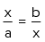 , ou, desenvolvendo a equação, a média geométrica de a e b é calculada como 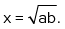 Note que as relações métricas no triângulo retângulo apresentam esse tipo de relação. Por exemplo, a partir da relação entre a altura relativa à hipotenusa e as projeções dos catetos sobre a hipotenusa, temos: 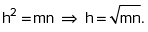 Assim, podemos dizer que a altura relativa à hipotenusade um triângulo retânguloé a média geométrica das projeções dos catetos sobre a hipotenusa.
3
Uma lâmpada está presa ao teto por dois barbantes, perpendiculares entre si, como mostra a figura. Determine a distância da lâmpada ao teto, sabendo que os barbantes medem 9 cm e 12 cm.

Resolução:
Sejam A e B os pontos em que os barbantes estão presos ao teto, C o ponto em que a lâmpada está presa ao barbante e CD a distância entre a lâmpada e o teto.

4
Dada a situação representada na figura a seguir, determine os valores das medidas indicadas por x, y e z.

Resolução:
Utilizando o teorema de Pitágoras no ΔAHC e por meio da relação métrica que envolve as projeções dos catetos e a altura relativa à hipotenusa, temos:
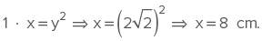Por fim, aplicando Pitágoras no ΔAHB:
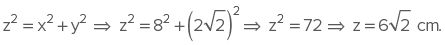1
Considerando a figura a seguir, determine qual das seguintes proporções é falsa:

2
Uma criança, cujo nível dos olhos está a 1 metro do chão, consegue visualizar completamente uma árvore sob um ângulo de visão de exatos 90°. Determine a altura da árvore sabendo que a criança está a 2 metros de distância dela. Utilize a aproximação 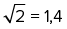 .
3
IFPE 2014 Uma formiguinha encontra-se no ponto A de um cubo com 10 cm de aresta, conforme a figura a seguir. Ela tem a capacidade de se deslocar em qualquer região da superfície externa do cubo e deseja chegar ao ponto B. Para isso ela deverá percorrer a diagonal da face superior desse cubo, atingir o ponto C e, por fim, caminhar sobre a aresta até chegar a B.

- 20
- 30


4
Os catetos de um triângulo retângulo medem 7 cm e 24 cm. Com base nessas informações, determine a medida:
- da hipotenusa desse triângulo.
- da projeção do maior cateto sobre a hipotenusa.
- da projeção do menor cateto sobre a hipotenusa.
- da altura relativa à hipotenusa.
5
Dada a figura a seguir, determine a medida x indicada.

6
Determine pelo menos seis relações métricas para os elementos indicados na figura a seguir.

7
A altura relativa à hipotenusa de um triângulo retângulo mede 12 cm, e uma das projeções dos catetos sobre a hipotenusa, 16 cm. Assim, determine a medida dos catetos desse triângulo.
8
A figura a seguir ilustra a piscina de um clube.

A partir das informações apresentadas, determine:
- o comprimento total da piscina.
- a profundidade máxima da piscina.
9
Duas crianças, afastadas 50 metros uma da outra, observam a mesma pipa pairando no ar. Sabe-se que a distância da primeira criança em relação à pipa é de 30 metros e, da segunda, 40 metros. Considerando desprezível a altura das crianças, determine a altura a que a pipa está do solo no momento dessa observação.
9
Um enfeite natalino é suspenso no ponto C por um barbante, preso pelos pontos A e B ao teto de uma casa, conforme a ilustração.

Sabendo que a distância do enfeite ao teto é de 12 cm e que a distância entre A e B é de 25 cm, determine o comprimento total do barbante.
1
IFSP Com uma trena e um esquadro em mãos, uma pessoa, em A, pode determinar a distância em que se encontra da base de uma árvore do outro lado do rio. Para tanto, fixa e estica um barbante de 39 m, de A até um ponto C qualquer, de modo que a linha visada AP seja perpendicular à linha AC, onde marca um ponto B a 3 m de C. Em seguida, a partir de C, ela caminha perpendicularmente à linha AC, afastando-se do rio e, quando vê B alinhado com a árvore, marca o ponto D. Constata, então, que a linha CD tem 4 m. Assim, a distância d indicada na figura, em metros, é igual a:

- 24,25.
- 27,00.
- 29,25.
- 48,00.
- 52,75.
2
UEL-PR 2019 Convenciona-se que o tamanho dos televisores, de tela plana e retangular, é medido pelo comprimento da diagonal da tela, expresso em polegadas. Define-se a proporção dessa tela como sendo o quociente do lado menor pelo lado maior, também em polegadas. Essas informações estão dispostas na figura a seguir.

Suponha que Eurico e Hermengarda tenham televisores como dado na figura e de proporção . Sabendo que o tamanho do televisor de Hermengarda é 5 polegadas maior que o de Eurico, assinale a alternativa que apresenta, corretamente, quantas polegadas o lado maior da tela do televisor de Hermengarda excede o lado correspondente do televisor de Eurico.
- 2
- 3
- 4
- 5
- 6
3
EEAR-SP 2019 Se ABC é um triângulo retângulo em A, o valor de n é

- 22
- 16
4
Determine as medidas das incógnitas indicadas em cada uma das situações a seguir.


5
Determine as medidas de todas as incógnitas representadas na figura.

6
Calcule a medida da altura x relativa à hipotenusa do triângulo retângulo indicado.

7
Determine as medidas das incógnitas representadas a seguir.

8
Uerj 2018 Segundo historiadores da matemática, a análise de padrões como os ilustrados a seguir possibilitou a descoberta das triplas pitagóricas.

Observe que os números inteiros 3², 4² e 5², representados respectivamente pelas 2a, 3a e 4a figuras, satisfazem ao Teorema de Pitágoras. Dessa forma (3, 4, 5) é uma tripla pitagórica.
Os quadrados representados pelas 4a, 11a e na figuras determinam outra tripla pitagórica, sendo o valor de n igual a:
- 10
- 2
- 14
- 16
9
Calcule o valor das variáveis m, n e h indicadas.

10
IFCE 2016 Um triângulo retângulo tem catetos medindo 1 e 2. Se um quadrado for construído tendo como lado a hipotenusa desse triângulo, a diagonal do quadrado medirá
Observe que os números inteiros 3², 4² e 5², representados respectivamente pelas 2a, 3a e 4a figuras, satisfazem ao Teorema de Pitágoras. Dessa forma (3, 4, 5) é uma tripla pitagórica.
Os quadrados representados pelas 4a, 11a e na figuras determinam outra tripla pitagórica, sendo o valor de n igual a:
11
Cefet-MG 2015 Na figura, os triângulos ABC e BDE são triângulos retângulos, onde 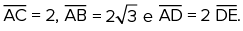

Desenhando o triângulo ACD, a medida do segmento CD é igual a
12
Uern 2015 Matheus marcou, em uma folha quadriculada de 1 × 1 cm, três pontos e ligou-os formando o seguinte triângulo:

É correto afirmar que o produto dos lados do triângulo é

13
Unicamp Em um aparelho experimental, um feixe laser emitido no ponto P reflete internamente três vezes e chega ao ponto Q, percorrendo o trajeto PFGHQ. Na figura a seguir, considere que o compri-mento do segmento PB é de 6 cm, o do lado AB é de 3 cm, o polígono ABPQ é um retângulo e os ângulos de incidência e reflexão são congruentes, como se indica em cada ponto da reflexão interna. Qual é a distância total percorrida pelo feixe luminoso no trajeto PFGHQ?

É correto afirmar que o produto dos lados do triângulo é
- 12 cm.
- 15 cm.
- 16 cm.
- 18 cm.
14
UEPB No retângulo ABCD de lados
 o segmento
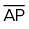
é perpendicular à diagonal
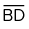
.
o segmento
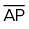
é perpendicular à diagonal
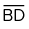
.

O segmento 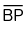 mede em cm:

15
IFSC 2015 Para acessar o topo de uma plataforma de saltos a 400 cm de altura, um atleta deve subir uma escadaria que possui 8 degraus no primeiro lance e 6 degraus no segundo lance de escada, conforme mostra a figura a seguir.

Sabendo que cada degrau possui 30 cm de profundidade, é CORRETOafirmar que o comprimento, em cm, da haste metálica AB utilizada para dar sustentação à plataforma é:
- 300
- 400
- 500
- 200
- 100
16
UFPA Uma passarela construída em uma BR no Pará tem um vão livre de comprimento 4L. A sustentação da passarela é feita a partir de 3 cabos de aço presos em uma coluna à esquerda a uma altura D da passarela. Esta coluna por sua vez é presa por um cabo de aço preso a um ponto na mesma altura da passarela, e a uma distância L da passarela, conforme representa a figura a seguir.

Supondo L
- 57
- 111
17
CMRJ 2017 A figura a seguir mostra uma rampa de acesso que foi construída adjacente a uma escada existente em uma das entradas de um prédio em uma escola. A rampa foi construída dentro das normas que regulam a inclinação de rampas para pessoas com necessidades especiais (cadeirantes e pessoas com mobilidade limitada).

Modificada: http://ew7.com.br/projeto-arquitetonico-com-autocad/images/stories/rampas7.png
Para que a rampa fique dentro das normas, são necessários mais alguns ajustes, como, por exemplo, a sinalização com piso tátil para deficientes visuais, em toda a sua extensão até a frente da porta. O custo do piso tátil instalado, de 1,20 m de largura, é 150 reais por metro.
Para sinalizar a rampa, a escola gastará aproximadamente
- 1 780 reais.
- 1 785 reais.
- 1 790 reais.
- 1 795 reais.
- 1 805 reais.
18
IFCE A altura, baixada sobre a hipotenusa de um triângulo retângulo, mede 12 cm, e as projeções dos catetos sobre a hipotenusa diferem de 7 cm. Os lados do triângulo são, em centímetros, iguais a
- 10, 15 e 20.
- 12, 17 e 22.
- 15, 20 e 25.
- 16, 21 e 26.
- 18, 23 e 28.
19
Em um triângulo retângulo, as projeções dos catetos sobre a hipotenusa medem 18 cm e 6 cm. Determine a altura relativa à hipotenusa.
20
A altura relativa à hipotenusa de um triângulo retângulo mede 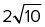 cm, e a diferença entre a maior projeção de um cateto sobre a hipotenusa e a menor é de 3 cm. Determine a medida da hipotenusa desse triângulo.
21
Fuvest Na figura, os ângulos assinalados são retos. Temos necessariamente:

- xy
= pm - x2
+ y2= p2+ m2
22
ITA Seja ABC um triângulo retângulo cujos catetos
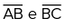
medem 8 cm e 6 cm, respectivamente. Se D é um ponto sobre
 e o triângulo ADC é isósceles, a medida do segmento
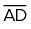
, em cm, é igual a
e o triângulo ADC é isósceles, a medida do segmento
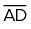
, em cm, é igual a
23
FGV No triângulo retângulo ABC, retângulo em C, tem-se que
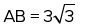
. Sendo P um ponto de
 tal que
perpendicular a
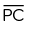
, a maior medida possível de
tal que
perpendicular a
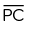
, a maior medida possível de
 é igual a
é igual a
24
UFMG Nesta figura, os ângulos
são retos e os segmentos AD, CD e BC medem, respectivamente, x,y e z:
 Nessa situação, a altura do triângulo ADE em relação ao lado AE é dada por
Nessa situação, a altura do triângulo ADE em relação ao lado AE é dada por
25
Unifei-MG Calcule a distância entre os pontos A e E da figura a seguir, onde BD

26
UFMG Nesta figura, o quadrado ABCD está inscrito no triângulo AMN, cujos lados AM e
NA medem, respectivamente, m e n:
 Então, o lado do quadrado mede:
Então, o lado do quadrado mede:

27
A figura indica um triângulo equilátero ABC, em que
são perpendiculares a
, respectivamente. Se AB
Seção olímpica
1
Em um retângulo ABCD, marcam-se os pontos E e F em
respectivamente, de maneira que
e DF
, G pertencendo ao segmento
 , de modo que EG ⋅ DF
, de modo que EG ⋅ DF
2
OBMEP O topo de uma escada de 25 m de comprimento está encostado na parede vertical de um edifício. O pé da escada está a 7 m de distância da base do edifício, como na figura. Se o topo da escada escorregar 4 m para baixo ao longo da parede, qual será o deslocamento do pé da escada?
- 4 m
- 8 m
- 9 m
- 13 m
- 15 m